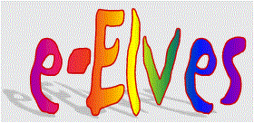

|  |
| Home | | Research | | People | Publications | Slides | ||
| e.l.e.c.t.r.i.c e.l.v.e.s | ||||||
Dynamic Team Formation and Crisis Response in Complex Organizations projects by Milind Tambe, David Pynadath, Craig Knoblock, Steve Minton, Yolanda Gil, and Hans Chalupsky.
Rosetta: Ontology-Based Translation by Hans Chalupsky, Yolanda Gil, Jim Blythe, and Bob MacGregor.
Phosphorus: Ontology-Based Matchmaking by Hans Chalupsky, Yolanda Gil, Tom Russ, and Surya Ramachandran.
Teamcore Proxy by David Pynadath.
Automatic Data Extraction by Kristina Lerman.
Teamcore: Rapid, Robust Teams from Heteregeneous, Distribute Agents by Milind Tambe and David Pynadath.